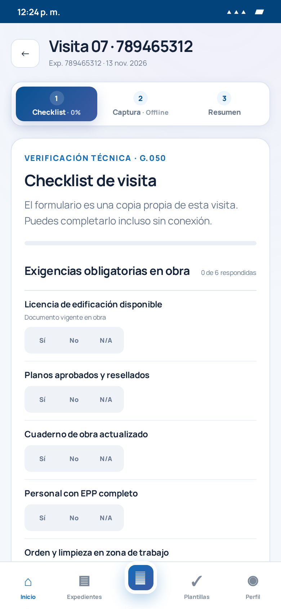
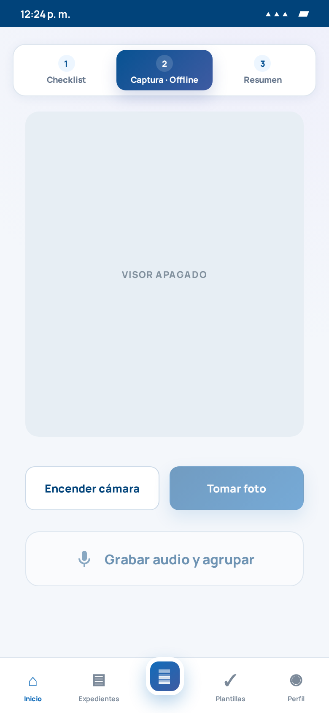
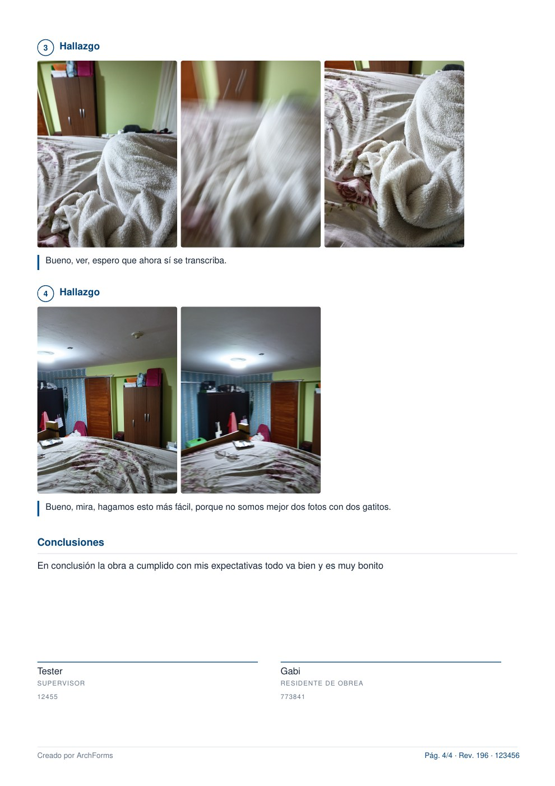

Report and Run
Muy genérico: no genera los informes que necesita un IMO.
Y no es broma.
 Informe_final_final.docx— □ ×
Informe_final_final.docx— □ ׿Y tu mayor problema?
ACOMODAR FOTOGRAFÍASACLAREMOS ALGO.
Todos lo conocemos.
Todos lo hemos usado.
El problema es ese... son herramientas
Word Excel
Excel WhatsApp
WhatsAppInspector Municipal de Obra (IMO)
Una visita, un informe para la municipalidad.

 ARCHFORMS
ARCHFORMS

EXPORTADO DESDE ARCHFORMS
Un checklist, unas fotos y un audio.
Y el informe está listo.



Microsoft ExcelMuy genérico: no genera los informes que necesita un IMO.
Demasiado intrusivo: el exceso de IA le quita valor al informe.
Genera informes específicos para IMOs.
Hecho PARA los arquitectos.
QUIÉNES SOMOS
Melisa RiveraFounder - Computer Science | CatLover
César PeralesFounder - Computer Science | Hijo de Arquitectos
 ¿Conoces a un inspector
¿Conoces a un inspector